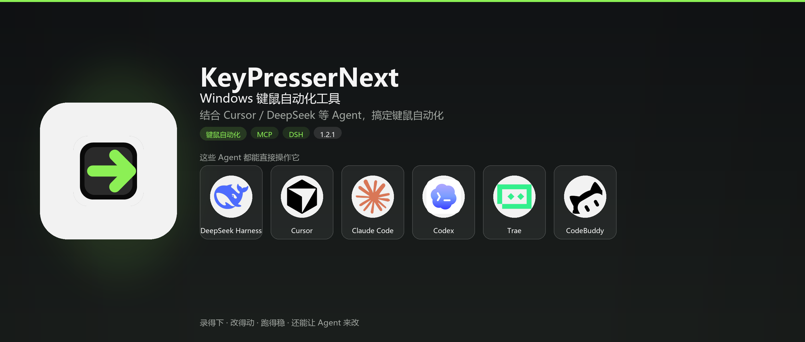

说意图，不用逐行点
告诉 Agent「绑记事本」「加一行 Ctrl+S」「间隔改成 2 秒」——不必自己在列表里找行、填坐标、按 F9。
Windows 自动化工具
把按键、鼠标、识图收进同一套行编辑器，NextCore 新引擎驱动，顺序与独立运行一键切换。 支持 MCP 与 DeepSeek Harness——跟 Cursor / DeepSeek 等 Agent 说话，就能绑窗、改行、开跑。新用户免注册试用 15 天。 MCP / DSH 接入说明 →

界面预览

Agent
接入 MCP 或 DSH 后，不只改脚本——按键点不到、识图失败、不会绑窗，直接问 Agent 就能排错换模式、手把手带你上手。
告诉 Agent「绑记事本」「加一行 Ctrl+S」「间隔改成 2 秒」——不必自己在列表里找行、填坐标、按 F9。
绑窗、录制、改行、测试键鼠、保存 .kpn……界面上能干的 Agent 都能做；改完主窗口马上刷新，和你亲手点的一样。
按键没反应、鼠标点不到、识图找不到？描述现象，Agent 能帮你换截图 / 键鼠模式、勾置顶、跑运行前测试——不用自己猜该用 dx 还是 gdi。
没看过用户帮助也不怕：怎么绑窗、怎么录制、怎么接 MCP，用自然语言问 Agent，它按步骤帮你点界面，等于随身有个会用 KeyPresserNext 的助手。
Cursor、Codex、Trae、Claude Code 等支持 MCP 的客户端，复制配置即用。工具名 keypressernext，一条通道操控本程序。
用 DeepSeek 本机 Agent？菜单装插件、重启，就能对话操控——适合已经习惯 Harness 工作流的用户。
接入流程
mcp.jsonkeypressernext：绑窗、改行、录制、开跑、测试键鼠等.kpnWorkflow
F8 录制 · F9 开跑 · F1 帮助
新用户免注册试用 15 天；菜单「账号 → 授权 / 登录…」。
点「选择窗口」绑定；可用「凸显」确认绑对了谁。
先测截图 / 鼠标 / 键盘，确认模式对目标有效。
F8 录制，或手动加按键 / 鼠标行，支持批量导入。
保存 .kpn，F9 开始；次数、间隔、速率可调。
键鼠无效时怎么换模式
截图 normal.auto · 键鼠 windows · 绑定 mode 0
键鼠改 dx，或勾「置顶」并用 normal
先测截图；普通窗试 gdi；全屏 / 游戏试 dx
Features
把按键、鼠标、识图收进同一套可编辑工作流。
按键、鼠标、识图在同一列表编排，不用在多个工具间拷配置。
录制拆成可编辑行；间隔、坐标、按下/弹起事后都能微调。
顺序逐步执行，或各行独立循环；独立模式支持长按。
选窗、凸显、置顶；先测截图 / 鼠标 / 键盘，再正式开跑。
新引擎驱动；配置与 assets 可分享；兼容 16 位色老程序。
| 能力 | 专业版 | Next |
|---|---|---|
| 形态 | 多模块分工具 | 统一行编辑器 |
| 录制 | 偏固定回放 | 按下 / 弹起可编辑 |
| 运行 | 各工具自有逻辑 | 顺序 / 独立切换 |
| Agent | — | MCP / DSH |
| 配置 | 各模块独立 | .kpn + assets |
FAQ
keypressernext）与 DSH。mcp.json。需本机 Node；Agent 与本程序同一 Windows 用户。工具名 keypressernext。dx / normal 或勾置顶；识图先「测试截图」。看日志。已接 MCP / DSH 的话，直接跟 Agent 描述现象，让它帮你换模式。KeyPresserNext.exe / NextCore.dll，安装目录加入信任。KeyPresserNext.exe "D:\foo.kpn" --autorun。已打开则转到已有窗口。